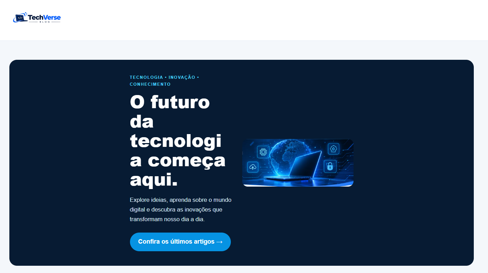
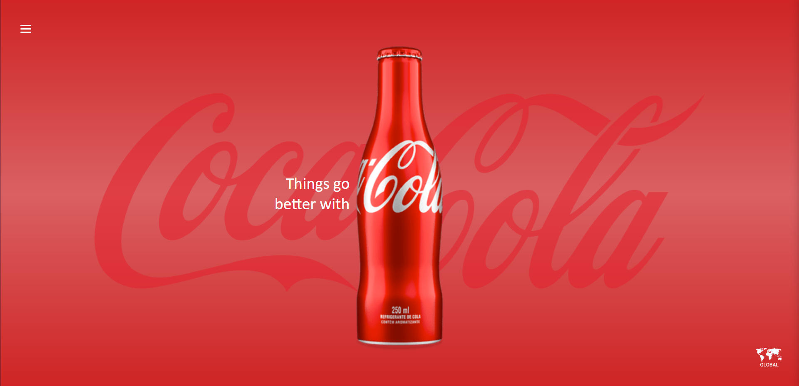
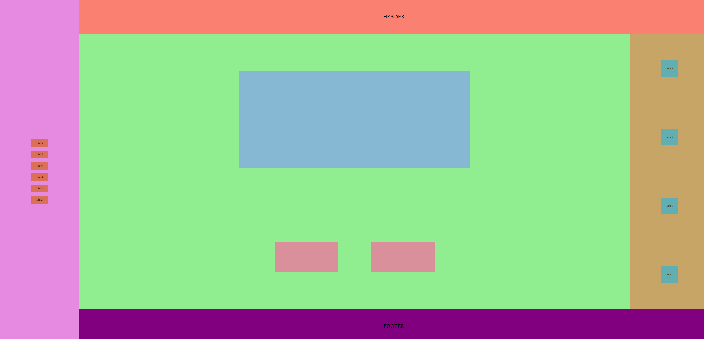
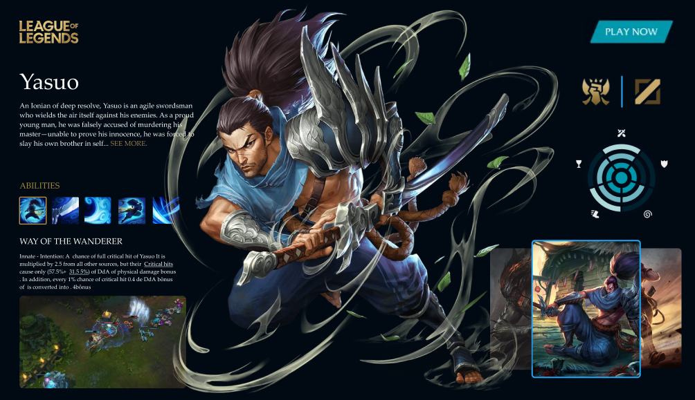
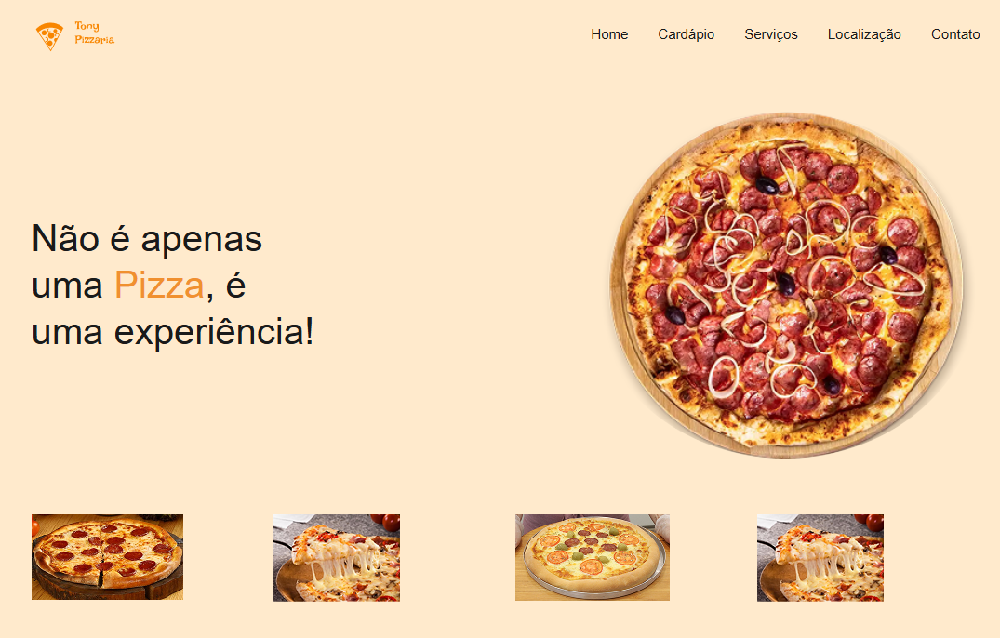
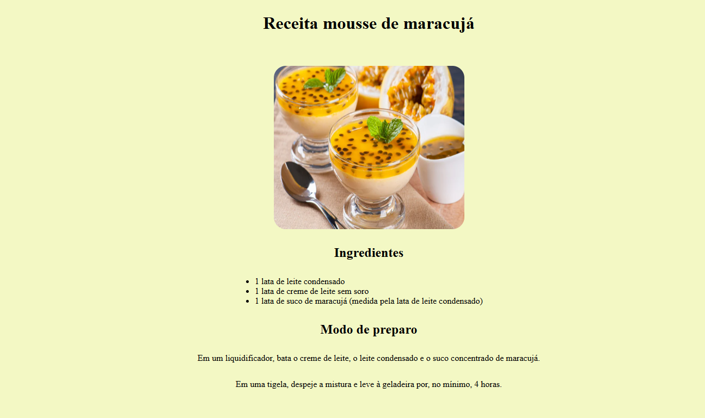
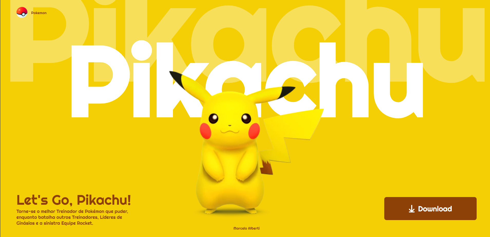
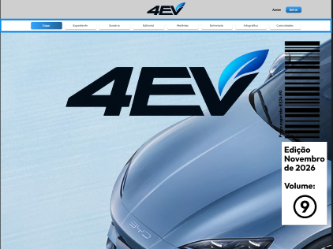
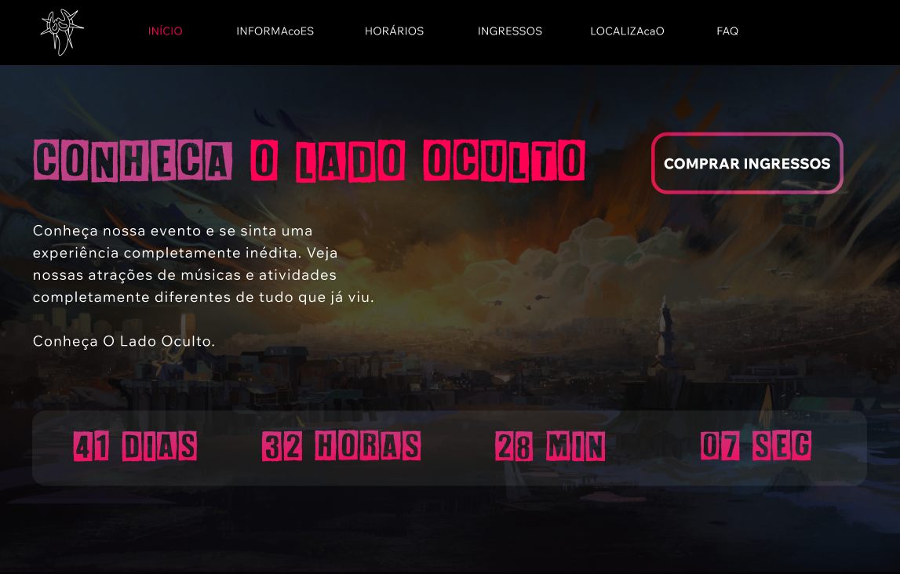

Marcelo Alberti
Estudante de sistemas para internet
Olá, me chamo Marcelo, tenho 22 anos e estudo sistemas para internet na Fatec São Roque. Esse portfólio tem o objetivo de demostrar os conhecimentos e habilidade desenvolvidos durante o semestre.
Ver projetosMatérias
Inglês II
Em Inglês II aprendemos a usar do e does para formar frases no presente simples. Praticamos a variação entre frases afirmativas e negativas, entendendo qual auxiliar usar de acordo com o sujeito da frase.
Redes e Internet
Em Redes e Internet estudamos as camadas dos modelos OSI e DoD e conceitos essenciais como DHCP, endereçamento IP e gateway. Também vimos os protocolos de roteamento, que definem o caminho que os dados percorrem entre as redes.
Bases de Internet
Padrões de Projetos de Sítios Internet

Aula Coca
Ver projeto
Layouts
Ver projeto
Yasuo Mobile First
Ver projeto
Pizzaria
Ver projeto
Receita
Ver projeto
Pikachu Mobile First
Ver projetoPráticas de Design

Revista Digital
Ver no Figma
Hotsite
Ver no FigmaMatemática Discreta
Em Matemática Discreta estudamos matrizes, a multiplicação de matrizes e as matrizes inversas. Também vimos a função quadrática e fizemos uma revisão de equações.